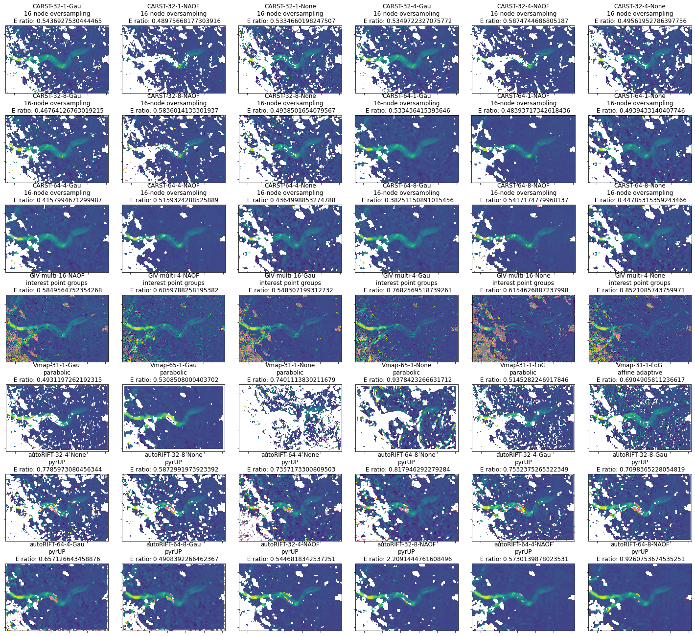
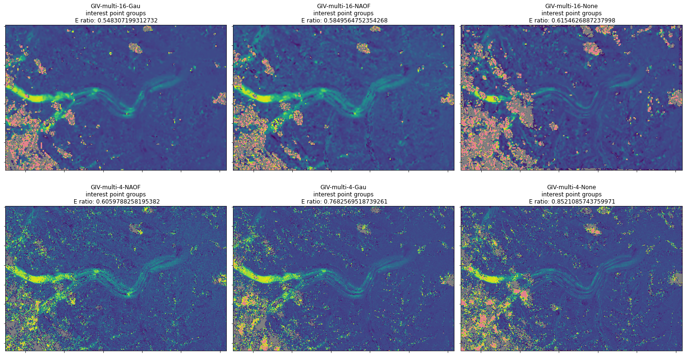

Contents
# Developer's setting
%load_ext autoreload
%autoreload 2
# import gftt
import matplotlib
import matplotlib.pyplot as plt
import matplotlib.patches as patches
from matplotlib import colors, cm
from matplotlib.colors import ListedColormap
import rasterio
from rasterio.plot import show
import numpy as np
import pandas as pd
import geopandas as gpd
viridis = cm.get_cmap('viridis', 256)
newcolors1 = viridis(np.linspace(0, 0.2, 128))
newcolors2 = viridis(np.linspace(0.2, 0.9, 256))
newcolors3 = viridis(np.linspace(0.9, 1, 256))
newcolors = np.vstack((newcolors1, newcolors2, newcolors3))
cmap = ListedColormap(newcolors)
cmap.set_over(np.array([202,0,32,128]) / 255)
cmap.set_under(np.array([0,0,0,128]) / 255)
cmap
from_list
![from_list colormap]( "from_list")
under
bad
over
df = pd.read_csv('../results_2022.csv', dtype=str)
df
| Date | Chip (px) | Resolution (px) | Prefilter | Subpixel | Software | Vx | Vy | OIE-x | OIE-y | OI-peak-x | OI-peak-y | slope_max-normal-E | slope_min-shear-E | E_ratio | pt0_velodiff | pt1_velodiff | pt2_velodiff | |
|---|---|---|---|---|---|---|---|---|---|---|---|---|---|---|---|---|---|---|
| 0 | Sen2-20180304-20180314 | 48 | 12 | Gau | 16-node oversampling | CARST | /home/jovyan/Projects/PX_comparison/PX/CARST/2... | /home/jovyan/Projects/PX_comparison/PX/CARST/2... | 0.5234375 | 0.546875 | -0.0703125 | 0.1953125 | 0.07121240778955427 | 0.1476625221583858 | 0.4822646041029315 | 0.0707952382398021 | -0.024048677120059092 | 0.9331177922963151 |
| 1 | Sen2-20180304-20180314 | 48 | 12 | NAOF | 16-node oversampling | CARST | /home/jovyan/Projects/PX_comparison/PX/CARST/2... | /home/jovyan/Projects/PX_comparison/PX/CARST/2... | 0.421875 | 0.4296875 | -0.0625 | 0.1640625 | 0.057825730765264476 | 0.10187571345771824 | 0.5676105599914552 | -0.079942040532759 | -0.0018444694062229594 | NaN |
| 2 | Sen2-20180304-20180314 | 48 | 12 | None | 16-node oversampling | CARST | /home/jovyan/Projects/PX_comparison/PX/CARST/2... | /home/jovyan/Projects/PX_comparison/PX/CARST/2... | 0.82421875 | 0.92578125 | -0.0416666679084301 | 0.1354166716337204 | 0.08011465048394165 | 0.1586928351360657 | 0.5048410056777303 | -0.2134502279587496 | -0.18126746448894213 | 4.574336387556573 |
| 3 | Sen2-20180304-20180314 | 48 | 1 | Gau | 16-node oversampling | CARST | /home/jovyan/Projects/PX_comparison/PX/CARST/2... | /home/jovyan/Projects/PX_comparison/PX/CARST/2... | 0.59375 | 0.578125 | -0.0625 | 0.1875 | 0.06251839827098954 | 0.12021969630375705 | 0.5200345716481047 | -0.0006168902075934235 | -0.03397063946564194 | 0.9228791304672247 |
| 4 | Sen2-20180304-20180314 | 48 | 1 | NAOF | 16-node oversampling | CARST | /home/jovyan/Projects/PX_comparison/PX/CARST/2... | /home/jovyan/Projects/PX_comparison/PX/CARST/2... | 0.40625 | 0.46875 | -0.0625 | 0.15625 | 0.03541088154443304 | 0.0732625344368767 | 0.48334229516647687 | -0.126817040532759 | -0.004174591702972796 | 7.474734070107358 |
| ... | ... | ... | ... | ... | ... | ... | ... | ... | ... | ... | ... | ... | ... | ... | ... | ... | ... | ... |
| 167 | Sen2-20180508-20180627 | 64 | 8 | Gau | pyrUP | autoRIFT | /home/jovyan/Projects/PX_comparison/PX/autoRIF... | /home/jovyan/Projects/PX_comparison/PX/autoRIF... | 0.34062498807907104 | 0.5375000238418579 | 0.05000000074505806 | -0.05000000074505806 | 0.15760919873237936 | 0.3327143712349554 | 0.4737072166356147 | -0.005819933211374417 | NaN | NaN |
| 168 | Sen2-20180508-20180627 | 32 | 4 | NAOF | pyrUP | autoRIFT | /home/jovyan/Projects/PX_comparison/PX/autoRIF... | /home/jovyan/Projects/PX_comparison/PX/autoRIF... | 0.25 | 0.33125001192092896 | 0.03750000149011612 | -0.012500000186264515 | 0.18708346203550627 | 0.3905031987969051 | 0.4790830462129085 | -0.04885339538431077 | NaN | NaN |
| 169 | Sen2-20180508-20180627 | 32 | 8 | NAOF | pyrUP | autoRIFT | /home/jovyan/Projects/PX_comparison/PX/autoRIF... | /home/jovyan/Projects/PX_comparison/PX/autoRIF... | 0.16249999403953552 | 0.24687500298023224 | 0.03750000149011612 | -0.02500000037252903 | 0.6872760424471992 | 1.2286516484977683 | 0.5593742077239784 | -0.04699578984576702 | NaN | NaN |
| 170 | Sen2-20180508-20180627 | 64 | 4 | NAOF | pyrUP | autoRIFT | /home/jovyan/Projects/PX_comparison/PX/autoRIF... | /home/jovyan/Projects/PX_comparison/PX/autoRIF... | 0.17499999701976776 | 0.2562499940395355 | 0.03750000149011612 | -0.012500000186264515 | 0.17688152982057523 | 0.3744389532922634 | 0.4723908350489183 | -0.07409072835651564 | NaN | NaN |
| 171 | Sen2-20180508-20180627 | 64 | 8 | NAOF | pyrUP | autoRIFT | /home/jovyan/Projects/PX_comparison/PX/autoRIF... | /home/jovyan/Projects/PX_comparison/PX/autoRIF... | 0.13750000298023224 | 0.21875 | 0.03750000149011612 | -0.012500000186264515 | 0.34574612002169486 | 0.5982839306147273 | 0.5778963838564847 | -0.06461714341503577 | NaN | NaN |
172 rows × 18 columns
df['E_ratio'] = df['E_ratio'].astype(float)
# demo = df.loc[df['Date'] == 'LS8-20180304-20180405']
# demo = df.loc[np.logical_and(df['Date'] == 'LS8-20180304-20180405', df['Subpixel'] != 'affine')]
# demo = df.loc[df['Date'] == 'LS8-20180802-20180818']
demo = df.loc[np.logical_and(df['Date'] == 'LS8-20180802-20180818', df['Subpixel'] != 'affine')]
# demo = df.loc[df['Date'] == 'Sen2-20180304-20180314']
# demo = df.loc[np.logical_and(df['Date'] == 'Sen2-20180304-20180314', df['Subpixel'] != 'affine')]
# demo = df.loc[df['Date'] == 'Sen2-20180508-20180627']
# demo = df.loc[np.logical_and(df['Date'] == 'Sen2-20180508-20180627', df['Subpixel'] != 'affine')]
# There are 43-1 tests
demo
| Date | Chip (px) | Resolution (px) | Prefilter | Subpixel | Software | Vx | Vy | OIE-x | OIE-y | OI-peak-x | OI-peak-y | slope_max-normal-E | slope_min-shear-E | E_ratio | pt0_velodiff | pt1_velodiff | pt2_velodiff | |
|---|---|---|---|---|---|---|---|---|---|---|---|---|---|---|---|---|---|---|
| 54 | LS8-20180802-20180818 | 32 | 1 | Gau | 16-node oversampling | CARST | /home/jovyan/Projects/PX_comparison/PX/CARST/2... | /home/jovyan/Projects/PX_comparison/PX/CARST/2... | 0.3369140625 | 0.3515625 | 0.05859375 | 0.029296875 | 0.052975391236509024 | 0.09743626513296255 | 0.543693 | -0.28223753508377536 | 0.02364095573224223 | NaN |
| 55 | LS8-20180802-20180818 | 32 | 1 | NAOF | 16-node oversampling | CARST | /home/jovyan/Projects/PX_comparison/PX/CARST/2... | /home/jovyan/Projects/PX_comparison/PX/CARST/2... | 0.17578125 | 0.17578125 | 0.029296875 | 0.0 | 0.03632251373896356 | 0.0741644067161415 | 0.489757 | -0.4441866770271471 | -0.04457624197222665 | NaN |
| 56 | LS8-20180802-20180818 | 32 | 1 | None | 16-node oversampling | CARST | /home/jovyan/Projects/PX_comparison/PX/CARST/2... | /home/jovyan/Projects/PX_comparison/PX/CARST/2... | 0.3515625 | 0.41015625 | 0.05859375 | 0.05859375 | 0.08468786836314918 | 0.15875025815321855 | 0.533466 | -0.26377623197631495 | 8.10353178110534 | NaN |
| 57 | LS8-20180802-20180818 | 32 | 4 | Gau | 16-node oversampling | CARST | /home/jovyan/Projects/PX_comparison/PX/CARST/2... | /home/jovyan/Projects/PX_comparison/PX/CARST/2... | 0.2783203125 | 0.29296875 | 0.0439453125 | 0.029296875 | 0.05660411668105885 | 0.10580757882437497 | 0.534972 | -0.27322100976998187 | 0.052519410541487344 | NaN |
| 58 | LS8-20180802-20180818 | 32 | 4 | NAOF | 16-node oversampling | CARST | /home/jovyan/Projects/PX_comparison/PX/CARST/2... | /home/jovyan/Projects/PX_comparison/PX/CARST/2... | 0.146484375 | 0.19775390625 | 0.029296875 | 0.0146484375 | 0.044186343479976 | 0.07521406603289425 | 0.587474 | -0.4441866770271471 | NaN | NaN |
| 59 | LS8-20180802-20180818 | 32 | 4 | None | 16-node oversampling | CARST | /home/jovyan/Projects/PX_comparison/PX/CARST/2... | /home/jovyan/Projects/PX_comparison/PX/CARST/2... | 0.35888671875 | 0.380859375 | 0.05859375 | 0.0439453125 | 0.08104939062759844 | 0.16353147136252952 | 0.495620 | -0.2526079128345775 | 4.074726230670764 | NaN |
| 60 | LS8-20180802-20180818 | 32 | 8 | Gau | 16-node oversampling | CARST | /home/jovyan/Projects/PX_comparison/PX/CARST/2... | /home/jovyan/Projects/PX_comparison/PX/CARST/2... | 0.263671875 | 0.281982421875 | 0.05126953125 | 0.03662109375 | 0.07128585666993421 | 0.15243705293842166 | 0.467641 | -0.27886944439807354 | 0.05489301642008626 | NaN |
| 61 | LS8-20180802-20180818 | 32 | 8 | NAOF | 16-node oversampling | CARST | /home/jovyan/Projects/PX_comparison/PX/CARST/2... | /home/jovyan/Projects/PX_comparison/PX/CARST/2... | 0.194091796875 | 0.245361328125 | 0.029296875 | 0.0146484375 | 0.05528982285444084 | 0.09473901466232162 | 0.583601 | -0.43075011132901936 | NaN | NaN |
| 62 | LS8-20180802-20180818 | 32 | 8 | None | 16-node oversampling | CARST | /home/jovyan/Projects/PX_comparison/PX/CARST/2... | /home/jovyan/Projects/PX_comparison/PX/CARST/2... | 0.340576171875 | 0.369873046875 | 0.05126953125 | 0.0439453125 | 0.1216131299687707 | 0.24625511640420183 | 0.493850 | -0.2685497213807726 | 0.05876908920316126 | NaN |
| 63 | LS8-20180802-20180818 | 64 | 1 | Gau | 16-node oversampling | CARST | /home/jovyan/Projects/PX_comparison/PX/CARST/2... | /home/jovyan/Projects/PX_comparison/PX/CARST/2... | 0.146484375 | 0.1025390625 | 0.05859375 | 0.029296875 | 0.0542441935709344 | 0.1016882087641228 | 0.533436 | -0.28223753508377536 | 0.03262323359459829 | NaN |
| 64 | LS8-20180802-20180818 | 64 | 1 | NAOF | 16-node oversampling | CARST | /home/jovyan/Projects/PX_comparison/PX/CARST/2... | /home/jovyan/Projects/PX_comparison/PX/CARST/2... | 0.0439453125 | 0.0732421875 | 0.029296875 | 0.0 | 0.03774534448971477 | 0.07799637341865022 | 0.483937 | 0.1954741702657894 | -0.09896475600271232 | NaN |
| 65 | LS8-20180802-20180818 | 64 | 1 | None | 16-node oversampling | CARST | /home/jovyan/Projects/PX_comparison/PX/CARST/2... | /home/jovyan/Projects/PX_comparison/PX/CARST/2... | 0.2197265625 | 0.2490234375 | 0.05859375 | 0.029296875 | 0.08791221512743728 | 0.177980372703618 | 0.493943 | -0.33900732761409125 | -0.3339386913777076 | NaN |
| 66 | LS8-20180802-20180818 | 64 | 4 | Gau | 16-node oversampling | CARST | /home/jovyan/Projects/PX_comparison/PX/CARST/2... | /home/jovyan/Projects/PX_comparison/PX/CARST/2... | 0.146484375 | 0.1171875 | 0.0439453125 | 0.029296875 | 0.05270481908971623 | 0.126755379109801 | 0.415799 | -0.27322100976998187 | 0.06530633108069261 | NaN |
| 67 | LS8-20180802-20180818 | 64 | 4 | NAOF | 16-node oversampling | CARST | /home/jovyan/Projects/PX_comparison/PX/CARST/2... | /home/jovyan/Projects/PX_comparison/PX/CARST/2... | 0.0439453125 | 0.06591796875 | 0.029296875 | 0.0 | 0.04064620281703503 | 0.07878202753688192 | 0.515932 | 0.1954741702657894 | -0.09896475600271232 | NaN |
| 68 | LS8-20180802-20180818 | 64 | 4 | None | 16-node oversampling | CARST | /home/jovyan/Projects/PX_comparison/PX/CARST/2... | /home/jovyan/Projects/PX_comparison/PX/CARST/2... | 0.234375 | 0.25634765625 | 0.05859375 | 0.0439453125 | 0.0881817982894845 | 0.20202020952039235 | 0.436500 | -0.3349540467997413 | -0.28439344655970616 | NaN |
| 69 | LS8-20180802-20180818 | 64 | 8 | Gau | 16-node oversampling | CARST | /home/jovyan/Projects/PX_comparison/PX/CARST/2... | /home/jovyan/Projects/PX_comparison/PX/CARST/2... | 0.13916015625 | 0.1171875 | 0.05126953125 | 0.029296875 | 0.07628988210484301 | 0.19944467114782213 | 0.382512 | -0.28352208950164826 | 0.04896379382041027 | NaN |
| 70 | LS8-20180802-20180818 | 64 | 8 | NAOF | 16-node oversampling | CARST | /home/jovyan/Projects/PX_comparison/PX/CARST/2... | /home/jovyan/Projects/PX_comparison/PX/CARST/2... | 0.047607421875 | 0.0732421875 | 0.029296875 | 0.00732421875 | 0.044558051716628966 | 0.08225330273890674 | 0.541717 | -0.006363867927107414 | -0.05710945708225379 | NaN |
| 71 | LS8-20180802-20180818 | 64 | 8 | None | 16-node oversampling | CARST | /home/jovyan/Projects/PX_comparison/PX/CARST/2... | /home/jovyan/Projects/PX_comparison/PX/CARST/2... | 0.223388671875 | 0.245361328125 | 0.05126953125 | 0.0439453125 | 0.14422342650319395 | 0.3220328479241733 | 0.447853 | -0.34071687209184975 | -0.30494922314039163 | NaN |
| 78 | LS8-20180802-20180818 | multi | 16 | NAOF | interest point groups | GIV | /home/jovyan/Projects/PX_comparison/PX/GIV/u_l... | /home/jovyan/Projects/PX_comparison/PX/GIV/v_l... | 0.19976005820210585 | 0.2196435618183573 | 0.059131150196932714 | -0.007235553023872132 | 0.038472953078017375 | 0.06577062517776763 | 0.584956 | -0.356108698929577 | -0.2164661010031761 | NaN |
| 79 | LS8-20180802-20180818 | multi | 4 | NAOF | interest point groups | GIV | /home/jovyan/Projects/PX_comparison/PX/GIV/u_l... | /home/jovyan/Projects/PX_comparison/PX/GIV/v_l... | 0.35642746725218655 | 0.35900018158445374 | 0.031766716830049224 | 0.0020364321598012602 | 0.1656849005339854 | 0.2734169800568687 | 0.605979 | -0.388083081426158 | -0.09760913648678099 | NaN |
| 80 | LS8-20180802-20180818 | multi | 16 | Gau | interest point groups | GIV | /home/jovyan/Projects/PX_comparison/PX/GIV/u_l... | /home/jovyan/Projects/PX_comparison/PX/GIV/v_l... | 0.13179707817378483 | 0.12640376363476258 | 0.030437282061943627 | -0.01028063448772043 | 0.030221794425469836 | 0.055118361501273236 | 0.548307 | -0.5525996737039552 | -0.36584754051224966 | NaN |
| 81 | LS8-20180802-20180818 | multi | 4 | Gau | interest point groups | GIV | /home/jovyan/Projects/PX_comparison/PX/GIV/u_l... | /home/jovyan/Projects/PX_comparison/PX/GIV/v_l... | 0.22440611297163765 | 0.21965735907681305 | 0.022260775423761647 | -0.0043621170697660805 | 0.08958837344354509 | 0.11661251255198128 | 0.768257 | -0.4689091658878318 | -0.48650286098405804 | NaN |
| 82 | LS8-20180802-20180818 | multi | 16 | None | interest point groups | GIV | /home/jovyan/Projects/PX_comparison/PX/GIV/u_l... | /home/jovyan/Projects/PX_comparison/PX/GIV/v_l... | 0.37927234728945547 | 0.3853822126172901 | 0.029802549953853452 | -0.03024678126823721 | 0.02566256002709901 | 0.041696370059916915 | 0.615463 | -0.5534357434657624 | -0.4430330232202381 | NaN |
| 83 | LS8-20180802-20180818 | multi | 4 | None | interest point groups | GIV | /home/jovyan/Projects/PX_comparison/PX/GIV/u_l... | /home/jovyan/Projects/PX_comparison/PX/GIV/v_l... | 0.28179917934703325 | 0.3429577148902264 | 0.02581682718746009 | -0.010256598938121475 | 0.08336241786231999 | 0.09783074642027474 | 0.852109 | -0.45974704116763565 | -0.5186511692503872 | NaN |
| 98 | LS8-20180802-20180818 | 31 | 1 | Gau | parabolic | Vmap | /home/jovyan/Projects/PX_comparison/PX/Vmap/pa... | /home/jovyan/Projects/PX_comparison/PX/Vmap/pa... | 0.13180652260780334 | 0.14630168676376343 | 0.03336005285382271 | 0.014998909085988998 | 0.1909629054108254 | 0.3872546468074712 | 0.493120 | -0.5386295110300181 | 0.31243711672139585 | NaN |
| 99 | LS8-20180802-20180818 | 65 | 1 | Gau | parabolic | Vmap | /home/jovyan/Projects/PX_comparison/PX/Vmap/pa... | /home/jovyan/Projects/PX_comparison/PX/Vmap/pa... | 0.07589006423950195 | 0.08465790003538132 | 0.033978044986724854 | 0.01481366902589798 | 0.1167604084566309 | 0.2199495761290206 | 0.530851 | -0.04060418344665884 | 0.7712735231830573 | NaN |
| 106 | LS8-20180802-20180818 | 31 | 1 | None | parabolic | Vmap | /home/jovyan/Projects/PX_comparison/PX/Vmap/pa... | /home/jovyan/Projects/PX_comparison/PX/Vmap/pa... | 0.8824338316917419 | 0.6246795654296875 | 0.037598203867673874 | 0.04254087433218956 | 0.14585871143686296 | 0.19707670329492996 | 0.740111 | -0.3974465844434656 | -0.4884268991361763 | NaN |
| 107 | LS8-20180802-20180818 | 65 | 1 | None | parabolic | Vmap | /home/jovyan/Projects/PX_comparison/PX/Vmap/pa... | /home/jovyan/Projects/PX_comparison/PX/Vmap/pa... | 0.42773598432540894 | 0.360848069190979 | 0.03729860112071037 | 0.04314224421977997 | 0.10617023251143566 | 0.11320691068528303 | 0.937842 | 0.33828906253376145 | -0.4881713037718206 | NaN |
| 115 | LS8-20180802-20180818 | 31 | 1 | LoG | parabolic | Vmap | /home/jovyan/Projects/PX_comparison/PX/Vmap/su... | /home/jovyan/Projects/PX_comparison/PX/Vmap/su... | 0.24266280233860016 | 0.25375068187713623 | 0.0411677248775959 | 0.023948421701788902 | 0.1570048114172755 | 0.30514324362152406 | 0.514528 | 0.06868404862601962 | -0.11339487695621492 | NaN |
| 116 | LS8-20180802-20180818 | 31 | 1 | LoG | affine adaptive | Vmap | /home/jovyan/Projects/PX_comparison/PX/Vmap/su... | /home/jovyan/Projects/PX_comparison/PX/Vmap/su... | 0.37073904275894165 | 0.4264712333679199 | 0.06388485431671143 | 0.03818996250629425 | 0.11299377970561324 | 0.16364275313029492 | 0.690491 | -0.23163188406240798 | 0.11913026571369756 | NaN |
| 136 | LS8-20180802-20180818 | 32 | 4 | None | pyrUP | autoRIFT | /home/jovyan/Projects/PX_comparison/PX/autoRIF... | /home/jovyan/Projects/PX_comparison/PX/autoRIF... | 0.703125 | 0.791015625 | 0.029296875 | 0.05859375 | 0.05303394890457013 | 0.06811473448025555 | 0.778597 | -0.4695749000604163 | 0.265110063142332 | NaN |
| 137 | LS8-20180802-20180818 | 32 | 8 | None | pyrUP | autoRIFT | /home/jovyan/Projects/PX_comparison/PX/autoRIF... | /home/jovyan/Projects/PX_comparison/PX/autoRIF... | 0.52734375 | 0.52734375 | 0.05859375 | 0.05859375 | 0.2040689663079441 | 0.3474701944324605 | 0.587299 | -0.4923422091634768 | 0.23653666733297662 | NaN |
| 138 | LS8-20180802-20180818 | 64 | 4 | None | pyrUP | autoRIFT | /home/jovyan/Projects/PX_comparison/PX/autoRIF... | /home/jovyan/Projects/PX_comparison/PX/autoRIF... | 0.615234375 | 0.8203125 | 0.05859375 | 0.05859375 | 0.045265884774780656 | 0.06152619073116042 | 0.735717 | -0.4441866770271471 | -0.3339386913777076 | NaN |
| 139 | LS8-20180802-20180818 | 64 | 8 | None | pyrUP | autoRIFT | /home/jovyan/Projects/PX_comparison/PX/autoRIF... | /home/jovyan/Projects/PX_comparison/PX/autoRIF... | 0.46875 | 0.791015625 | 0.05859375 | 0.05859375 | 0.059822294165113234 | 0.07313719094980284 | 0.817946 | -0.4441866770271471 | -0.3339386913777076 | NaN |
| 140 | LS8-20180802-20180818 | 32 | 4 | Gau | pyrUP | autoRIFT | /home/jovyan/Projects/PX_comparison/PX/autoRIF... | /home/jovyan/Projects/PX_comparison/PX/autoRIF... | 0.3515625 | 0.322265625 | 0.029296875 | 0.029296875 | 0.05414637579500139 | 0.0718848621951713 | 0.753238 | -0.45091017120332755 | -0.03945898579067375 | NaN |
| 141 | LS8-20180802-20180818 | 32 | 8 | Gau | pyrUP | autoRIFT | /home/jovyan/Projects/PX_comparison/PX/autoRIF... | /home/jovyan/Projects/PX_comparison/PX/autoRIF... | 0.3369140625 | 0.263671875 | 0.029296875 | 0.029296875 | 0.2333553884204349 | 0.32874525460897114 | 0.709837 | -0.368046095283029 | -0.03945898579067375 | NaN |
| 142 | LS8-20180802-20180818 | 64 | 4 | Gau | pyrUP | autoRIFT | /home/jovyan/Projects/PX_comparison/PX/autoRIF... | /home/jovyan/Projects/PX_comparison/PX/autoRIF... | 0.1171875 | 0.146484375 | 0.05859375 | -0.0 | 0.03890723995860014 | 0.059208130344261437 | 0.657127 | -0.3899165784332844 | -0.20354412383583387 | NaN |
| 143 | LS8-20180802-20180818 | 64 | 8 | Gau | pyrUP | autoRIFT | /home/jovyan/Projects/PX_comparison/PX/autoRIF... | /home/jovyan/Projects/PX_comparison/PX/autoRIF... | 0.146484375 | 0.146484375 | 0.05859375 | -0.0 | 0.04653671659324807 | 0.09481050834347546 | 0.490839 | -0.3899165784332844 | -0.20354412383583387 | NaN |
| 144 | LS8-20180802-20180818 | 32 | 4 | NAOF | pyrUP | autoRIFT | /home/jovyan/Projects/PX_comparison/PX/autoRIF... | /home/jovyan/Projects/PX_comparison/PX/autoRIF... | 0.087890625 | 0.087890625 | 0.05859375 | -0.0 | 0.07863364711138751 | 0.1443662009017143 | 0.544682 | -0.36394351503705724 | 0.010667658527047208 | NaN |
| 145 | LS8-20180802-20180818 | 32 | 8 | NAOF | pyrUP | autoRIFT | /home/jovyan/Projects/PX_comparison/PX/autoRIF... | /home/jovyan/Projects/PX_comparison/PX/autoRIF... | 0.087890625 | 0.1171875 | 0.05859375 | -0.0 | 0.6118046766556231 | 0.27694190364536264 | 2.209144 | -0.31316706897051877 | 0.010667658527047208 | NaN |
| 146 | LS8-20180802-20180818 | 64 | 4 | NAOF | pyrUP | autoRIFT | /home/jovyan/Projects/PX_comparison/PX/autoRIF... | /home/jovyan/Projects/PX_comparison/PX/autoRIF... | 0.05859375 | 0.05859375 | 0.05859375 | -0.0 | 0.03792886693604499 | 0.06619186920987975 | 0.573014 | -0.31316706897051877 | -0.09896475600271232 | NaN |
| 147 | LS8-20180802-20180818 | 64 | 8 | NAOF | pyrUP | autoRIFT | /home/jovyan/Projects/PX_comparison/PX/autoRIF... | /home/jovyan/Projects/PX_comparison/PX/autoRIF... | 0.05859375 | 0.05859375 | 0.05859375 | -0.0 | 0.26216639805363057 | 0.2830940194149882 | 0.926075 | -0.31316706897051877 | -0.09896475600271232 | NaN |
fig, ax3 = plt.subplots(7, 6, figsize=(20, 18))
n = 0
for idx, row in demo.iterrows():
label = '-'.join((row.Software, row['Chip (px)'], row['Resolution (px)'], row.Prefilter)) + '\n' + row.Subpixel + '\n E ratio: {}'.format(row.E_ratio)
ax_sel = ax3[n // 6, n % 6]
with rasterio.open(row.Vx) as vx_src:
show(vx_src, ax=ax_sel, vmin=-0.5, vmax=2, cmap=cmap)
ax_sel.set_title(label)
ax_sel.xaxis.set_ticklabels([])
ax_sel.yaxis.set_ticklabels([])
n += 1
plt.tight_layout()
fig.patch.set_facecolor('xkcd:white')
# fig.savefig('tmp.png')

# demo2 = demo.loc[np.logical_or(demo['E_ratio'] > 0.8 , demo['E_ratio'] < 0.45)]
demo2 = demo.loc[demo['Software'] == 'GIV']
demo2 = demo2.sort_values(by=['Resolution (px)', 'E_ratio'])
demo2
| Date | Chip (px) | Resolution (px) | Prefilter | Subpixel | Software | Vx | Vy | OIE-x | OIE-y | OI-peak-x | OI-peak-y | slope_max-normal-E | slope_min-shear-E | E_ratio | pt0_velodiff | pt1_velodiff | pt2_velodiff | |
|---|---|---|---|---|---|---|---|---|---|---|---|---|---|---|---|---|---|---|
| 80 | LS8-20180802-20180818 | multi | 16 | Gau | interest point groups | GIV | /home/jovyan/Projects/PX_comparison/PX/GIV/u_l... | /home/jovyan/Projects/PX_comparison/PX/GIV/v_l... | 0.13179707817378483 | 0.12640376363476258 | 0.030437282061943627 | -0.01028063448772043 | 0.030221794425469836 | 0.055118361501273236 | 0.548307 | -0.5525996737039552 | -0.36584754051224966 | NaN |
| 78 | LS8-20180802-20180818 | multi | 16 | NAOF | interest point groups | GIV | /home/jovyan/Projects/PX_comparison/PX/GIV/u_l... | /home/jovyan/Projects/PX_comparison/PX/GIV/v_l... | 0.19976005820210585 | 0.2196435618183573 | 0.059131150196932714 | -0.007235553023872132 | 0.038472953078017375 | 0.06577062517776763 | 0.584956 | -0.356108698929577 | -0.2164661010031761 | NaN |
| 82 | LS8-20180802-20180818 | multi | 16 | None | interest point groups | GIV | /home/jovyan/Projects/PX_comparison/PX/GIV/u_l... | /home/jovyan/Projects/PX_comparison/PX/GIV/v_l... | 0.37927234728945547 | 0.3853822126172901 | 0.029802549953853452 | -0.03024678126823721 | 0.02566256002709901 | 0.041696370059916915 | 0.615463 | -0.5534357434657624 | -0.4430330232202381 | NaN |
| 79 | LS8-20180802-20180818 | multi | 4 | NAOF | interest point groups | GIV | /home/jovyan/Projects/PX_comparison/PX/GIV/u_l... | /home/jovyan/Projects/PX_comparison/PX/GIV/v_l... | 0.35642746725218655 | 0.35900018158445374 | 0.031766716830049224 | 0.0020364321598012602 | 0.1656849005339854 | 0.2734169800568687 | 0.605979 | -0.388083081426158 | -0.09760913648678099 | NaN |
| 81 | LS8-20180802-20180818 | multi | 4 | Gau | interest point groups | GIV | /home/jovyan/Projects/PX_comparison/PX/GIV/u_l... | /home/jovyan/Projects/PX_comparison/PX/GIV/v_l... | 0.22440611297163765 | 0.21965735907681305 | 0.022260775423761647 | -0.0043621170697660805 | 0.08958837344354509 | 0.11661251255198128 | 0.768257 | -0.4689091658878318 | -0.48650286098405804 | NaN |
| 83 | LS8-20180802-20180818 | multi | 4 | None | interest point groups | GIV | /home/jovyan/Projects/PX_comparison/PX/GIV/u_l... | /home/jovyan/Projects/PX_comparison/PX/GIV/v_l... | 0.28179917934703325 | 0.3429577148902264 | 0.02581682718746009 | -0.010256598938121475 | 0.08336241786231999 | 0.09783074642027474 | 0.852109 | -0.45974704116763565 | -0.5186511692503872 | NaN |
fig, ax4 = plt.subplots(2, 3, figsize=(20, 11))
n = 0
for idx, row in demo2.iterrows():
label = '-'.join((row.Software, row['Chip (px)'], row['Resolution (px)'], row.Prefilter)) + '\n' + row.Subpixel + '\n E ratio: {}'.format(row.E_ratio)
ax_sel = ax4[n // 3, n % 3]
with rasterio.open(row.Vx) as vx_src:
show(vx_src, ax=ax_sel, vmin=-0.5, vmax=2, cmap=cmap)
ax_sel.set_title(label)
ax_sel.xaxis.set_ticklabels([])
ax_sel.yaxis.set_ticklabels([])
n += 1
plt.tight_layout()
fig.patch.set_facecolor('xkcd:white')
fig.savefig('tmp2.png')
